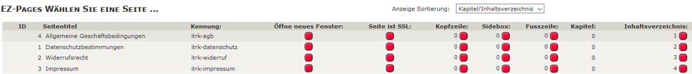

Vorintegrierte Module: IT Recht Kanzlei
Sinn und Zweck dieses Moduls
AGB-Service für Zen Cart der IT-Recht Kanzlei für mtl. 9,90 Euro - monatlich kündbar
Abmahnsichere Rechtstexte für Zen Cart der IT-Recht Kanzlei
Individuell angepasst & schnell verfügbar
Automatische Überwachung & Aktualisierung durch die AGB-Schnittstelle
„Die IT-Recht Kanzlei hat bereits weit über 40.000 gewerbliche Online-Präsenzen abgesichert“
Jetzt das Starter-Paket der IT-Recht Kanzlei buchen ->
Warum IT-Recht Kanzlei ?
Mit dem AGB-Service der IT-Recht Kanzlei für Zen Cart erhalten Sie abmahnsichere Rechtstexte die durch die Fachanwälte der Kanzlei ständig überprüft und aktuell gehalten werden. Nach der einmaligen One-Klick-Installation überwacht und aktualisiert die - ohne Zusatzkosten - im Leistungsumfang enthaltene AGB-Schnittstelle die Rechtstexte automatisch. Egal ob Übertragungsprobleme, beschädigte Seiten oder vielleicht doch einmal ein Serverausfall – falls die IT-Recht Kanzlei bei den Rechtstexten einen Fehler registriert, werden Sie umgehend informiert.
Schutz vor Abmahnungen bei voller Kostenflexibiliät
Sie können diesen AGB-Service genau so lange nutzen, wie Sie ihn brauchen und bei Bedarf jederzeit monatlich kündigen. Es ist kein Jahres-Abo und keine Mitgliedschaft erforderlich.
Vorteile unseres AGB-Service für Zen Cart
- Abmahnsichere AGB, Widerrufsbelehrung, Datenschutzerklärung & Impressum
- Inklusive Rechtstexte-Update-Service
- Mehr als 50 kostenfreie eCommerce Muster & Handlungsanleitungen
- Komfortable Integration in Ihren Zen Cart-Shop über die AGB-Schnittstelle
- Automatische Überwachung und Aktualisierung der Rechtstexte
- Keine Einrichtungsgebühr & keine versteckten Kosten
- Keine Mitgliedschaft erforderlich
- Jederzeit monatlich kündbar
- Auf Wunsch inklusive anwaltlicher Tiefenprüfung Ihrer ZenCart Präsenz auf rechtliche Fallstricke (z.B. im Bestellablauf & -prozess) im Rahmen unseres Unlimited-Pakets: http://www.it-recht-kanzlei.de/agb-paket-unlimited.php
Selbstverständlich: Anwaltliche Haftung
Wie andere Rechtsanwaltskanzleien haften auch wir im Rahmen der gesetzlichen Bestimmungen für die Abmahnsicherheit der Rechtstexte.
So geht´s
Jetzt das Starter-Paket der IT-Recht Kanzlei buchen ->
Danach erhalten Sie Ihre Zugangsdaten zu unserem Mandantenportal. Dort können Sie Ihre Rechtstexte komfortabel individualisieren und anschließend einmalig über die AGB-Schnittstelle in Ihren Zen Cart Shop integrieren.
Bei Fragen zur Integration stehen wir Ihnen natürlich sehr gerne – kostenfrei- zur Seite.
Support
Bei Fragen vor und nach Ihrer AGB-Service Anforderung stehen wir Ihnen telefonisch unter der Rufnummer 089-1304 433-0 oder per Mail unter info@it-recht-kanzlei.de zur Verfügung.
KONFIGURATION
Funktionsweise der Schnittstelle
Die IT Recht Kanzlei "pusht" aktualisierte Rechtstexte für AGB, Datenschutz und Widerrufsrecht an Ihren Zen Cart Shop.
Eine automatische Aktualisierung des Impressums ist vorgesehen, derzeit aber im Mandantenportal nicht aktiv.
Bei dieser Aktualisierung werden die entsprechenden Inhaltsseiten im Shop automatisch aktualisiert und es werden falls aktiviert entsprechende pdf Dateien im Shop gespeichert.
Die benötigten Inhaltsseiten wurden bei der Installation des Moduls bereits als EZ Pages angelegt.
Es müssen EZ Pages sein, da nur bei EZ Pages der Seiteninhalt in der Datenbank hinterlegt ist, so dass die hinterlegten Texte dann automatisch datenbankseitig aktualisiert werden.
Diese EZ Pages dienen rein der Speicherung der automatisierten Rechtstexte. Sie sind daher so konfiguriert, dass sie weder in Sideboxes oder Header und Footer aufscheinen, sie benötigen auch kein Kapitel oder Inhaltsverzeichnis:

In Zen Cart arbeiten Sie für die Seiten AGB, Datenschutz, Widerrufsrecht und Impressum normalerweise mit den "Define Pages" unter Tools > Seiteneditor.
Das sind im Frontend die Seiten
index.php?main_page=conditions (AGB)
index.php?main_page=privacy (Datenschutz)
index.php?main_page=widerrufsrecht (Widerrufsrecht)
index.php?main_page=impressum (Impressum)
Da diese Define Pages normalerweise im Checkout und in der Sidebox Information verlinkt sind, macht es Sinn, für diese Seiten auch weiterhin die dafür vorgesehenen Define Pages anzusprechen.
Dieses Modul hat die 4 betroffenen Define Pages so verändert, dass ihr Aufruf nicht mehr so wie bisher den Inhalt der hinterlegten Textdateien liefert, sondern den Inhalt der 4 neuen EZ Pages.
Um diese EZ Pages korrekt ansprechen zu können hat das Modul die Tabelle ezpages mit einem neuen Feld page_key erweitert.
Diese Kennung ist nur für die 4 speziellen EZ Pages nötig und es wurde die entsprechende Kennung bereits hinterlegt.
Sie müssen die Inhalte dieser EZ Pages nie manuell bearbeiten, Sinn der Sache ist ja, dass die 4 Seiten automatisch mit den Rechtstexten der IT Recht Kanzlei befüllt werden.
Ebensowenig müssen Sie die Seiten define_conditions, define_privacy, define_widerruf und define_impressum unter Tools > Seiteneditor je wieder bearbeiten.
Falls Sie in Ihrem Zen Cart Shop derzeit die Seiten AGB, Datenschutz, Widerruf und Impressum mit EZ Pages statt wie normalerweise mit Define Pages abbilden, empfehlen wir, diese "alten" EZ Pages zu deaktivieren oder zu löschen und stattdessen die vom Modul mitgelieferten bereits vollständig konfigurierten neuen 4 EZ Pages zu verwenden.
Konfiguration unter Konfiguration > IT Recht Kanzlei
Unter Konfiguration > IT Recht Kanzlei finden Sie in Ihrer Zen Cart Administration nun folgende Menüpunkte vor:
IT Recht Kanzlei - Ist das Modul aktiv?
Steht nach der Installation auf nein.
Stellen Sie erst dann auf ja, wenn Sie die Grundkonfiguration so wie hier beschrieben abgeschlossen und sich mit dem Handling vertraut gemacht haben
IT Recht Kanzlei - API Token
Um mit Ihrem Shop sicher komunizieren zu können, benötigt die Schnittstelle eine API Token.
Diese wurde bei der Installation des Moduls automatisch generiert und muss normalerweise nicht geändert werden. Sollten Sie eine neue Token generieren wollen, dann ist das unter Tools > IT Recht Kanzlei möglich.
Notieren Sie sich die angezeigte Token, Sie benötigen sie für Ihr Mandentenportal bei der IT Recht Kanzlei.
Die Token wird Ihnen auch unter Tools > IT Recht Kanzlei angezeigt, so dass Sie sie später leicht herauskopieren können
IT Recht Kanzlei - API Version
zeigt die aktuelle Version der API Schnittstelle
IT Recht Kanzlei - EZ Page Kennung für Rechtstext AGB
Diese Kennung müssen Sie nicht ändern, sie wurde bereits bei der Modulinstallation voreingestellt.
Die Kennung legt fest, welche EZ Page für die Speicherung der AGB Texte verwendet wird.
Voreinstellung: itrk-agb
IT Recht Kanzlei - EZ Page Kennung für Rechtstext Datenschutzerklärung
Diese Kennung müssen Sie nicht ändern, sie wurde bereits bei der Modulinstallation voreingestellt.
Die Kennung legt fest, welche EZ Page für die Speicherung der Datenschutz Texte verwendet wird.
Voreinstellung: itrk-datenschutz
IT Recht Kanzlei - EZ Page Kennung für Rechtstext Widerrufsbelehrung
Diese Kennung müssen Sie nicht ändern, sie wurde bereits bei der Modulinstallation voreingestellt.
Die Kennung legt fest, welche EZ Page für die Speicherung der Widerrufsbelehrung Texte verwendet wird.
Voreinstellung: itrk-widerruf
IT Recht Kanzlei - EZ Page Kennung für Rechtstext Impressum
Diese Kennung müssen Sie nicht ändern, sie wurde bereits bei der Modulinstallation voreingestellt.
Die Kennung legt fest, welche EZ Page für die Speicherung der Impressum Texte verwendet wird.
Voreinstellung: itrk-impressum
IT Recht Kanzlei - AGB auch als pdf abrufen?
Hier können Sie einstellen, ob die AGB auch als pdf verfügbar sein sollen.
Falls ja wird auf der AGB Seite das von der IT Recht Kanzlei gepushte pdf zum Download verfügbar sein.
Falls Sie das Zen Cart Modul pdf Rechnung installiert haben, kann dieses Modul darauf zugreifen und die AGB gleich bei der Bestellung mit der Bestellbestätigung mitmailen.
IT Recht Kanzlei - Datenschutzerklärung auch als pdf abrufen?
Hier können Sie einstellen, ob die Datenschutzerklärung auch als pdf verfügbar sein soll.
Falls ja wird auf der Datenschutz Seite das von der IT Recht Kanzlei gepushte pdf zum Download verfügbar sein.
IT Recht Kanzlei - Widerrufsbelehrung auch als pdf abrufen?
Hier können Sie einstellen, ob die Widerrufsbelehrung auch als pdf verfügbar sein soll.
Falls ja wird auf der Widerrrufsrecht Seite das von der IT Recht Kanzlei gepushte pdf zum Download verfügbar sein.
Falls Sie das Zen Cart Modul pdf Rechnung installiert haben, kann dieses Modul darauf zugreifen und die Widerrufsbelehrung gleich bei der Bestellung mit der Bestellbestätigung mitmailen.
IT Recht Kanzlei - Speicherort der pdf Dateien
In welchem Ordner am Server sollen die pdf Dateien gespeichert werden?
Lassen Sie diese Einstellung auf includes/pdf, damit das Modul pdf Rechnung falls installiert auf die pdf Dateien zugreifen kann.
Infos unter Tools > IT Recht Kanzlei
Unter Tools > IT Recht Kanzlei finden Sie eine Übersicht der wichtigsten aktuellen Einstellungen. So können Sie z.B. Ihre Shop URL und API Token auslesen, die Sie für Ihr Mandantenportal der IT Recht Kanzlei benötigen. Und falls Sie eine neue API Token generieren wollen ist das ebenfalls hier möglich.
Hinweise für die Aktualisierung/Bearbeitung des Impressums
In Ihrem Mandantenportal ist wahrscheinlich die Übertragung des Impressums nicht vorgesehen. Solange diese Funktion im Mandantenportal nicht verfügbar ist, müssen Sie das Impressum in Ihrem Shop manuell editieren.
Verwenden Sie dazu die entsprechende EZ Page mit der Kennung itrk-impressum.
Hinweise für mehrsprachige Shops
Normalerweise werden von der IT Recht Kanzlei nur deutschsprachige Texte bereitgestellt. Die Schnittstelle ist aber so konfiguriert, dass sie auch z.B. englischsprachige Texte - falls in Ihrem Paket verfügbar - unterstützt.
Falls Sie in ihrem Paket nur deutschsprachige Rechtstexte haben, dann werden ausschließlich die 4 deutschen EZ Pages mit den Inhalten befüllt.
Die 4 EZ Pages für deutsch und englisch sind bereits vorinstalliert.
Sollten Sie in ihrem Shop auch die englische Sprache aktiv haben, dann müssen Sie die entsprechenden englischen EZ Pages selbst mit Inhalt befüllen.
Dazu schalten Sie den Admin auf englisch um und bearbeiten dann die 4 speziellen EZ Pages mit den Kennungen itrk-agb, itrk-datenschutz, itrk-widerruf und itrk-impressum.
Achten Sie darauf, dass Sie die Kennungen dieser Seiten nicht ändern, sie müssen dieselben Kennungen haben wie die EZ Pages der deutschen Sprache.
Sollten in Ihrem Paket später einmal englische Texte für den Push verfügbar sein, dann werden die englischen Texte genau in diese englischen EZ Pages gepusht.
Sollten Sie in Ihrem Shop weitere Sprachen aktiv haben, dann legen Sie in der jeweiligen Sprache die 4 EZ Pages
genauso an wie in der deutschen Version und verwenden dabei immer exakt dieselben Kennungen.
Hinweise für das Modul pdf Rechnung
Falls Sie die pdf Rechnung in Zen Cart 1.5.5 deutsch aktiv haben, dann lassen Sie vermutlich AGB und Widerruf gleich mit der Bestellbestätigung als pdf Anhänge mitmailen. Die pdfs der IT Kanzlei Schnittstelle werden - falls aktiviert - im selben Verzeichnis abgelegt, das auch die pdf Rechnung für AGB und Widerruf nutzt: includes/pdf
Das pdf der AGB ist dabei immer benannt als agb_de.pdf
Das pdf der Widerrufsbelehrung ist dabei immer benannt als widerruf_de.pdf
Stellen Sie daher unter Konfiguration > pdf Rechnung
Ihre gewünschten Dateianhänge ein auf:
agb_de.pdf|widerruf_de.pdf
Sie müssen nie wieder selbst ein neues AGB pdf erstellen und per FTP in includes/pdf hochladen wenn sich Ihre AGB ändern. Die pdf Rechnung verwendet einfach immer die stets aktuellen pdfs der IT Recht Kanzlei
Support
Supportforum für allgemeine Fragen zum Modul:
www.zen-cart-pro.at/forum/forums/123-IT-Recht-Kanzlei-Schnittstelle
Als Kunde der IT Recht Kanzlei wenden Sie sich bitte bei Schwierigkeiten direkt an den Support der IT Recht Kanzlei
Unterstützen
Sie finden dieses Modul nützlich?
Unterstützen Sie die Weiterentwicklung der deutschen Zen Cart Version.
Wir freuen uns über Spenden zur Finanzierung des Servers und der vBulletin-Lizenz:

Du bist Entwickler und willst helfen, die deutsche Zen Cart Version noch besser zu machen?
Beteilige Dich auf Github:
https://github.com/zencartpro